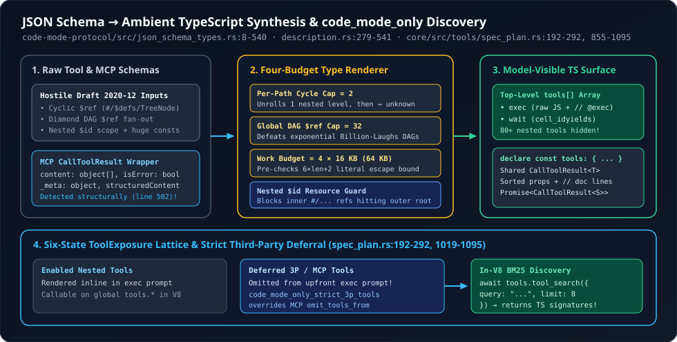

1. JSON Schema to Ambient TypeScript Synthesis, Recursive $ref Budgets & code_mode_only Discovery
Connect five enterprise MCP servers (GitHub, Linear, Slack, Sentry, Postgres) to a coding agent and your top-level tools[] array immediately balloons to 90+ verbose Draft 2020-12 JSON Schemas—burning 35,000+ prefix tokens before the user types a single word and degrading tool-selection accuracy. Worse, untrusted MCP servers routinely advertise recursive $ref cycles or diamond DAG schemas capable of exponential “Billion Laughs” memory blowups. Inside code-mode-protocol/src/json_schema_types.rs, description.rs, and core/src/tools/spec_plan.rs, OpenAI Codex solves both problems simultaneously: collapsing the model-facing tool surface down to exec + wait, compiling JSON Schemas into compact ambient TypeScript declarations under four mathematical expansion budgets, and deferring third-party tools behind in-V8 BM25 search.
1. Why Ambient TypeScript Beats Raw JSON Schema—and the Four-Budget Firewall
Frontier code models see orders of magnitude more TypeScript .d.ts declarations during pretraining than Draft 2020-12 JSON Schema ASTs. Rendering {"type":"object","properties":{"city":{"type":"string"}},"required":["city"],"additionalProperties":false} as { city: string; } cuts token volume by 3–5× while mapping directly onto the JavaScript syntax the model writes inside exec.
However, dereferencing arbitrary MCP JSON Schemas inline is an adversarial minefield: a cyclic schema (TreeNode -> children: TreeNode[]) loops forever, while an acyclic $d$-level diamond DAG where each definition references the next $b$ times expands a $O(d \cdot b)$-byte input into $\Theta(b^d)$ bytes! Look at how JsonSchemaTypeRenderer (json_schema_types.rs:8-53) bounds space and time simultaneously across four orthogonal budgets:

code-mode-protocol and core/src/tools/spec_plan.rs: untrusted Draft 2020-12 schemas pass through four anti-blowup budgets into typed Promise<CallToolResult<T>> declarations, while deferred MCP tools stay off-prompt until queried via tools.tool_search.// codex-rs/code-mode-protocol/src/json_schema_types.rs (lines 8-17 & 180-213, condensed)
const MAX_LOCAL_REF_EXPANSIONS_PER_PATH: usize = 2;
const MAX_TOTAL_LOCAL_REF_EXPANSIONS: usize = 32;
pub const DEFAULT_INPUT_SCHEMA_MAX_BYTES: usize = 16_000;
const RENDER_WORK_MULTIPLIER: usize = 4;
// Inside JsonSchemaTypeRenderer::render_ref:
let active_expansions = self
.active_local_ref_expansions
.get(&pointer)
.copied()
.unwrap_or_default();
if active_expansions >= MAX_LOCAL_REF_EXPANSIONS_PER_PATH
|| self.remaining_local_ref_expansions == 0
{
return Some("unknown".to_string());
}
let target = if pointer.is_empty() { Some(self.root) } else { self.root.pointer(&pointer) }?;
self.remaining_local_ref_expansions -= 1;
self.active_local_ref_expansions.insert(pointer.clone(), active_expansions + 1);
let rendered = self.render(target);Look at the craft in json_schema_types.rs across every edge case of JSON Schema Draft 2020-12:
- Two-Step Recursive Unrolling (
MAX_LOCAL_REF_EXPANSIONS_PER_PATH = 2): Why2instead of1? If you cut off recursion on the first self-reference (1), aTreeNoderenders as{ value: string; children?: Array<unknown>; }—hiding the recursive relationship from the LLM! Allowing2active expansions along a path renders{ value: string; children?: Array<{ value: string; children?: Array<unknown>; }>; }, teaching the model the exact self-similar shape before terminating cleanly withunknown. - Pre-Serialization Allocation Bounds (
json_literal_serialization_upper_bound,lines 412-419, 522-540): Checking output length after callingserde_json::to_stringon a maliciousconstorenumvalue is too late—an attacker can pass a huge string of control characters where every UTF-8 byte expands $6\times$ into\uXXXX! Codex computesstring.len().saturating_mul(6).saturating_add(2)before serializing, trippingrender_work_budget_exhausted = truewith zero heap spike. - Nested
$idSub-Resource Isolation & Sibling Intersections (lines 60-68, 174-175, 218-232): In Draft 2020-12, a subschema containing"$id"establishes a new URI base resource, meaning fragment pointers#/defs/Fooinside it no longer point to the outer document root! Trackingnested_schema_resource_depthprevents resolving inner#/...refs against the wrong root, and when a$refcarries sibling validation keywords (properties,required), Codex intersects them cleanly as({referenced_type}) & ({sibling_type}). - Deterministic Property Sorting for KV-Cache Stability (
lines 342-343):sorted_properties.sort_unstable_by_key(|(name_a, _)| *name_a)guarantees that nondeterministic HashMap/JSON key ordering from external MCP servers never scrambles the generated TypeScript declaration or busts Codex’s prompt cache!
2. Structural CallToolResult<T> Deduplication & Identifier Normalization
MCP tools return a standard protocol envelope (content: ContentBlock[], isError?: boolean, _meta?: MetaObject, and an optional typed structuredContent). Repeating those 75 lines of TypeScript across 50 MCP tools would waste thousands of tokens. Instead, build_exec_tool_description (description.rs:325-330) emits MCP_TYPESCRIPT_PREAMBLE (lines 57-132) once at the top of the exec tool description, and mcp_structured_content_schema (lines 502-541) inspects each tool’s output_schema structurally:
- If the tool’s
output_schemamatches the MCPCallToolResultshape with a concretestructuredContentsubschema $S$, Codex synthesizesPromise<CallToolResult<RenderedS>>(line 466)! - Meanwhile,
normalize_code_mode_identifier(lines 381-403) maps hyphenated or namespaced tool keys likemcp__ologs__get-profileinto legal JS identifiers (mcp__ologs__get_profile), rendering both names in the heading (### mcp__ologs__get_profile (mcp__ologs__get-profile)) while quoting non-identifier object property keys viarender_json_schema_property_name(json_schema_types.rs:510-516).
3. ToolMode::CodeModeOnly, Six-State Exposure & BM25 tool_search
In core/src/tools/spec_plan.rs (lines 192-292, 855-1095), Codex separates whether a tool is callable inside V8 from where its schema appears in the LLM prompt using three exposure bits (DIRECT, DEFERRED, CODE_MODE) mapped onto six mutually exclusive ToolExposure states:
| Mode / Feature Flag | Top-Level LLM tools[] Array | Inside V8 tools.* Global |
|---|---|---|
ToolMode::CodeMode (Hybrid) | Direct tools + exec + wait | All Code-Mode-eligible direct and deferred tools |
ToolMode::CodeModeOnly | Only exec + wait (+ direct_only_tool_namespaces / web_search) | Enabled tools rendered as TS signatures inside exec’s description; deferred tools omitted from prompt |
Feature::CodeModeOnlyStrictThirdPartyTools | Zero third-party MCP/connector tools (ignores server omit_tools_from overrides, spec_plan.rs:244-254!) | All third-party tools forced into Deferred; discoverable on-demand via await tools.tool_search({query, limit: 8}) |
Notice why code_mode_only_strict_3p_tools (spec_plan.rs:192-198, 610-625) is such an important production safeguard: an overly eager MCP server or connector config might set omit_tools_from: ["deferred", "code_mode"] to force its 40 tools onto the top-level prompt. Under strict mode, Codex logs a warning without polluting the model’s prompt and forces every third-party tool into deferred BM25 discovery—so await tools.tool_search({query: "linear create issue", limit: 8}) returns exact TypeScript declarations only for the 3–8 tools the model actually needs!
4. Questions worth answering
parse_exec_source (description.rs:178-260) accept raw JavaScript with an optional first-line // @exec: {"yield_time_ms": ...} comment pragma instead of a JSON object {"code": "...", "yield_time_ms": ...}?Because exec is registered as a Freeform tool (ToolSpec::Freeform) rather than a JSON function tool! Writing multi-line JavaScript containing regexes, template literals, and quotes inside a JSON "code" string forces the LLM to double-escape every \" and \\n, causing frequent syntax errors. A first-line // @exec: comment keeps the body 100% unescaped valid JavaScript while still passing structured execution budgets safely bounded to MAX_JS_SAFE_INTEGER ($2^{53}-1$).
code_mode_tools (spec_plan.rs:1006-1014) track a seen: HashSet<String> after normalize_code_mode_identifier?Two distinct raw MCP tool names such as foo-bar and foo.bar both normalize to foo_bar in JavaScript. Deduplicating in deterministic registry order with an explicit tracing::warn! prevents silent property shadowing inside declare const tools and the V8 global dispatcher.